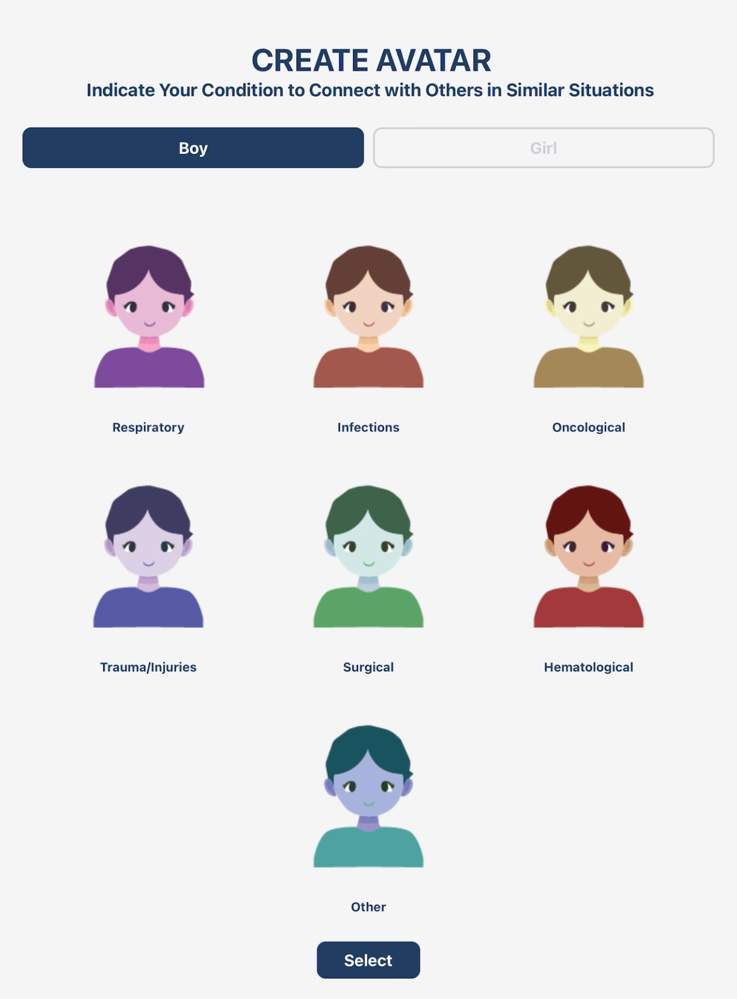
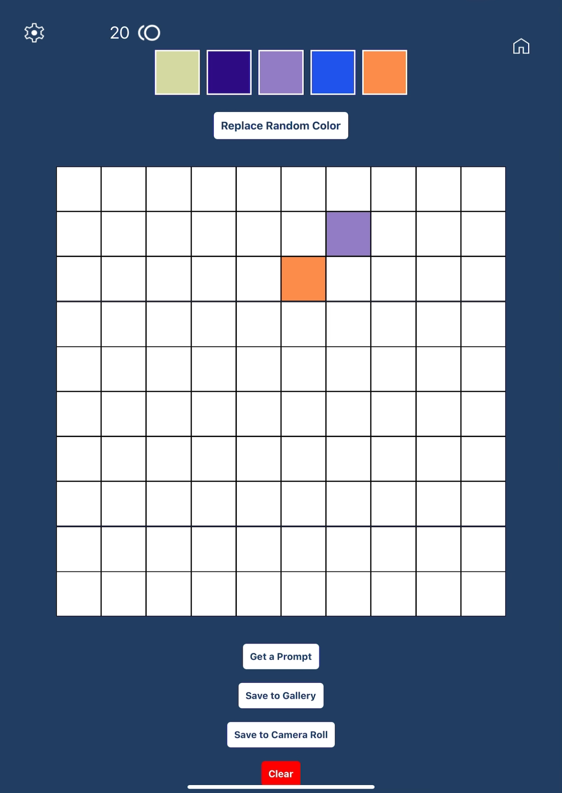
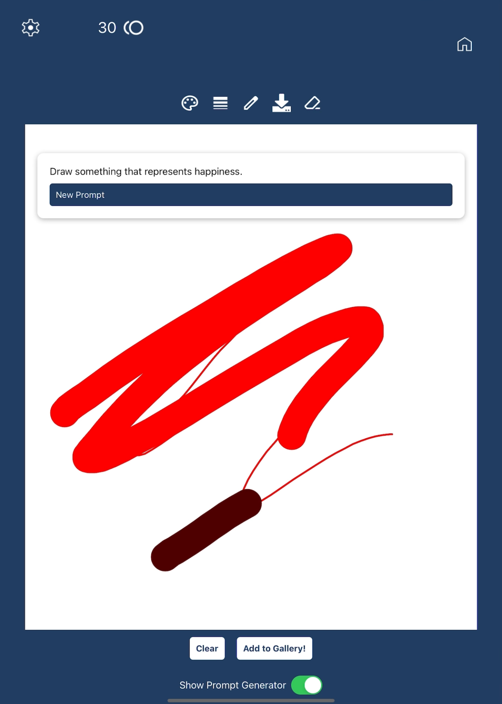
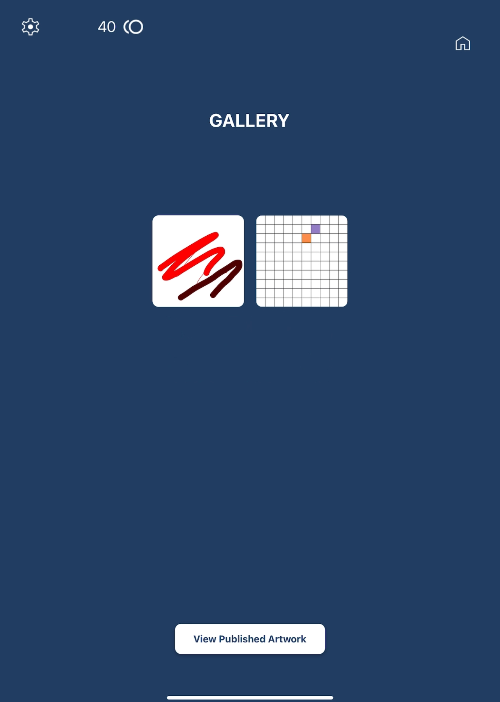
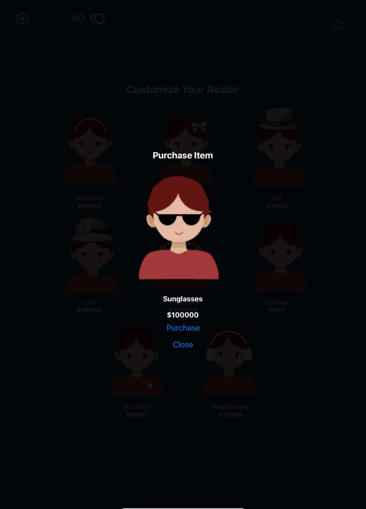

Paint Palz

"Paint Palz" is envisioned to serve as a therapeutic outlet for pediatric patients in hospitals. I wanted to help hospital patients feel more connected and less isolated during their hospital stay. The app creates a supportive environment where kids can express themselves creatively, alleviating some of the stress and loneliness associated with hospital stays. Paint Palz is divided into several features, with a goal of engaging young patients and improving their emotional well-being. Looking forward, I hope to continue improving the user interface until it is ready to implement into hospitals.
DESIGN PROCESS
I began by designing the graphics for each component of the app on Adobe Illustrator. I designed 126 avatars for the application. I also created the logo of the application within Adobe Illustrator using gender neutral colors to foster an inclusive environment. Each button was designed to enhance user experience and foster inution.

Next, I designed the user interface by creating a digital wireframe on Figma, a powerful tool for UI/UX design. I began the process by brainstorming and sketching simplified ideas that captured the core functionality and aesthetic of the app. This allowed me to focus on the essential features without getting bogged down by intricate details too early in the design process. Using Figma, I translated these concepts into a rough layout that visually represented the positioning of various elements on the screen. I meticulously organized components such as buttons, navigation bars, and content areas to ensure a user-friendly experience. Each element was strategically placed to enhance usability, making it intuitive for users to navigate the app. Throughout this phase, I prioritized creating a clear hierarchy, allowing users to easily identify important features and information.
I also spent this time researching the coding tools that would allow me to create a compatible interface with both Androdid and Ios. I discovered that through React Native and expo, I would be able to accomplish this goal.
User Interface
When users create an account, they are prompted with the create avatar screen which offers the opportunity for users to set a condition they are suffering from, or alternatively, pick other. This allows users to connect with other patients suffering similar conditions.
Users are able to interact with the Pixel Painting screen which offers users a therapeutic outlet by creating a challenging art experience. Users are able to randomize colors and use prompts to create designs.
The drawing screen is an experience that has more creative freedom. Users can use any color and stroke size to design their imagination. If they are struggling, there is a prompt generator with over 300 prompts that enhance wellbeing.
At the gallery screen, patients can explore a curated collection of their previously created art pieces, allowing them to reflect on their creative journey and the emotions they expressed through their work. Each piece is displayed in a visually engaging manner, showcasing the unique style and perspective of the artist. In addition to viewing their artwork, patients are given the option to publish their creations to a shared community gallery. This feature fosters a sense of connection and support, as it allows them to reach out to others who may be experiencing similar challenges. By sharing their art, patients can inspire others, spark conversations about their experiences, and find solace in knowing they are not alone in their struggles.
As they create artwork, users earn coins for each time they add their drawings or paintings to their gallery. This offers an incentive to engage in more activities. Using these coins, individuals can purchase different outfits for their avatar customizing it to truly represent them.
Takeaways and Additional Steps
Working on this application provided me with valuable experience in coding with React Native and Expo, deepening my understanding of mobile development. I not only learned the technical aspects of programming but also honed my skills in creating designs that are both interactive and user-friendly. Balancing functionality with aesthetics was a key focus for me, as I aimed to ensure that users could easily navigate the app while enjoying a visually appealing experience. As I continue to refine and improve this application, I am excited about the prospect of integrating it into hospital environments. My goal is to enhance patient experiences and facilitate better communication within healthcare settings, making a meaningful impact on those who rely on these services.